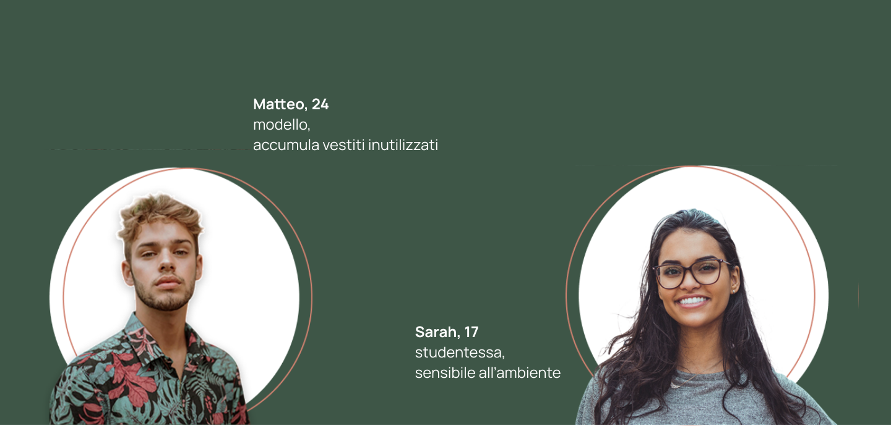
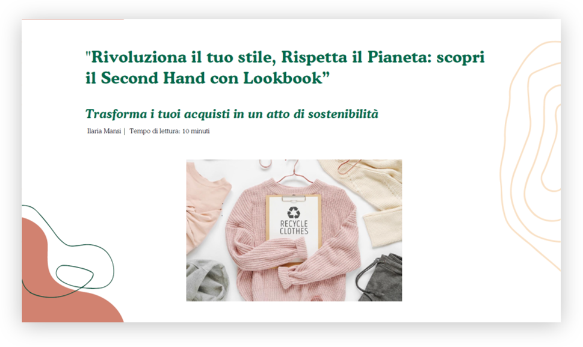
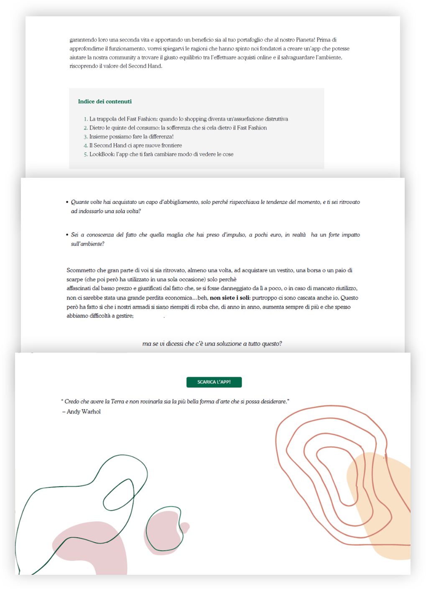

Copywriting / UI writing
LookBook
Concept editoriale per una piattaforma second hand. Il progetto definisce target, tono di voce, headline, principi persuasivi e struttura di un contenuto digitale.

Un progetto di contenuto, non solo di scrittura.
LookBook nasce dal tema del second hand e dalla tensione tra moda, sostenibilità e fast fashion. Il target scelto è giovane, sensibile all’immagine ma anche alle tematiche ambientali.
Il lavoro costruisce una voce colloquiale e amichevole, con headline, sottotitoli, leve emotive e contenuti pensati per coinvolgere senza appesantire.

01 · Target
Scrivere partendo da persone reali.
La definizione del target e delle buyer personas orienta il tono: diretto, giovane, empatico, vicino a chi vive la moda anche come espressione personale.

02 · Headline
Rendere immediata la promessa.
Headline e sottotitolo collegano stile e sostenibilità. L’obiettivo è comunicare un beneficio personale senza perdere il valore etico del progetto.

03 · Articolo
Dare ritmo alla lettura.
Il contenuto alterna domande, dati, esempi quotidiani e CTA, trasformando un tema potenzialmente pesante in un racconto accessibile.
Risultato.
LookBook mostra il mio lato più editoriale: uso parole, ritmo e gerarchia per costruire un’esperienza più chiara e coinvolgente.